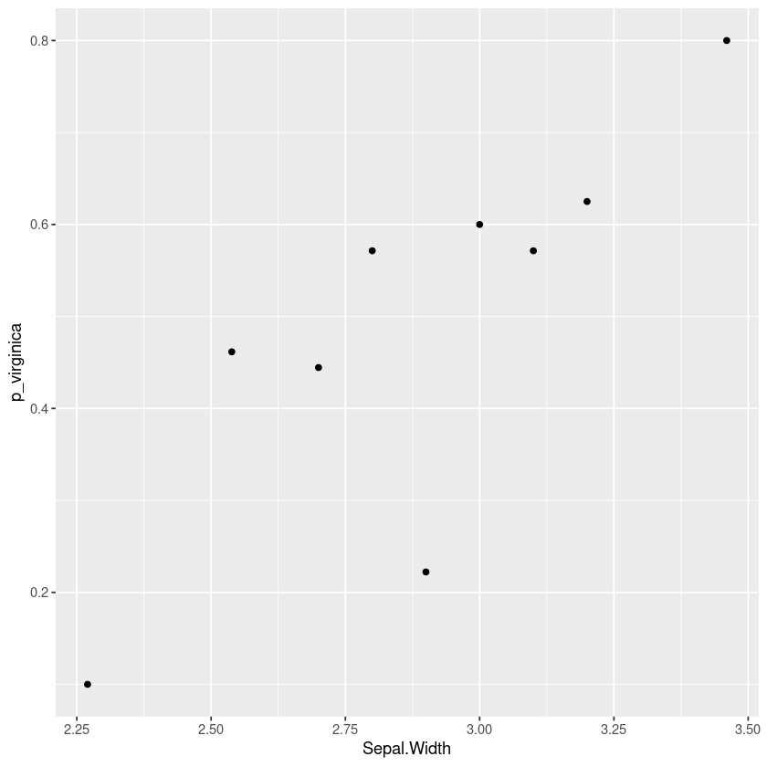
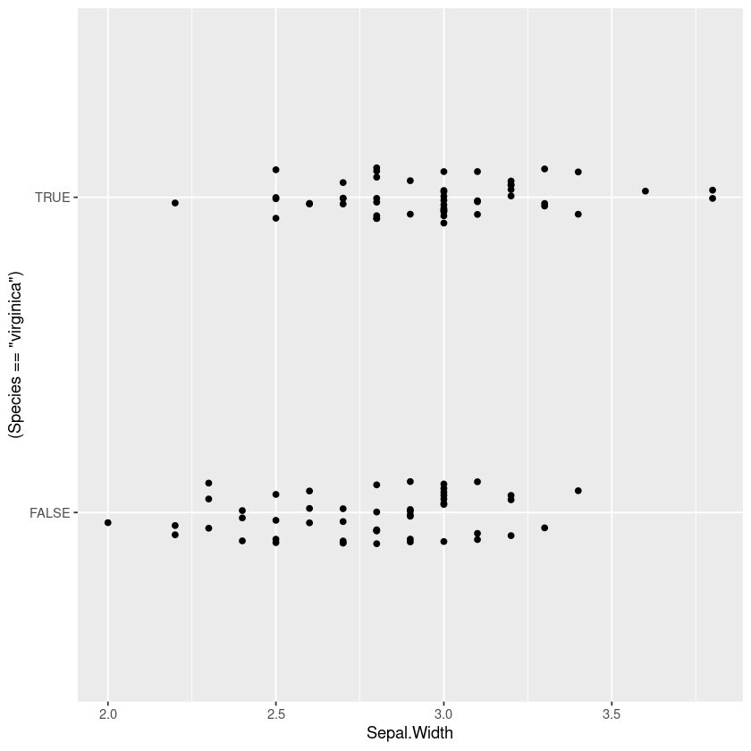
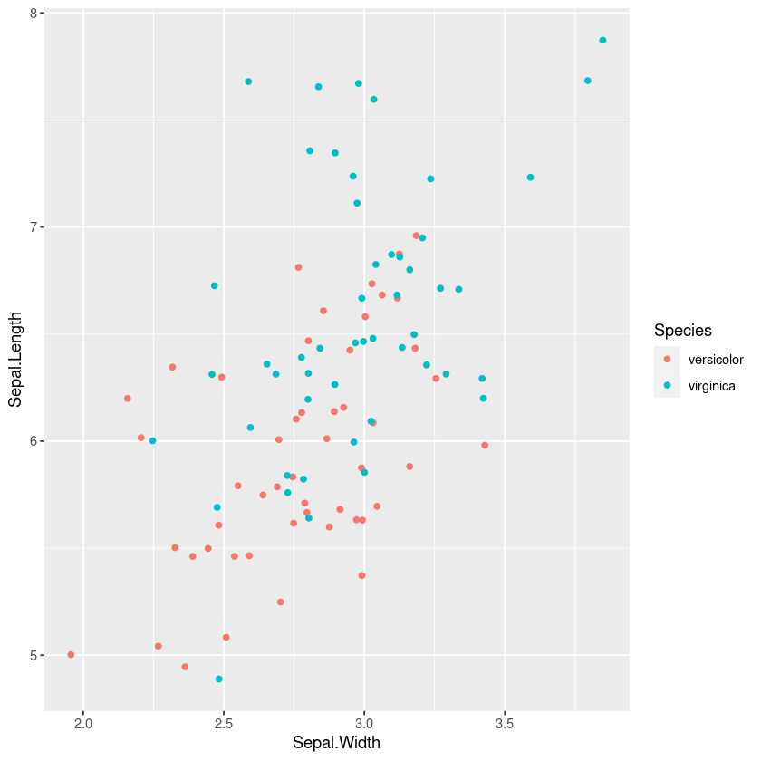
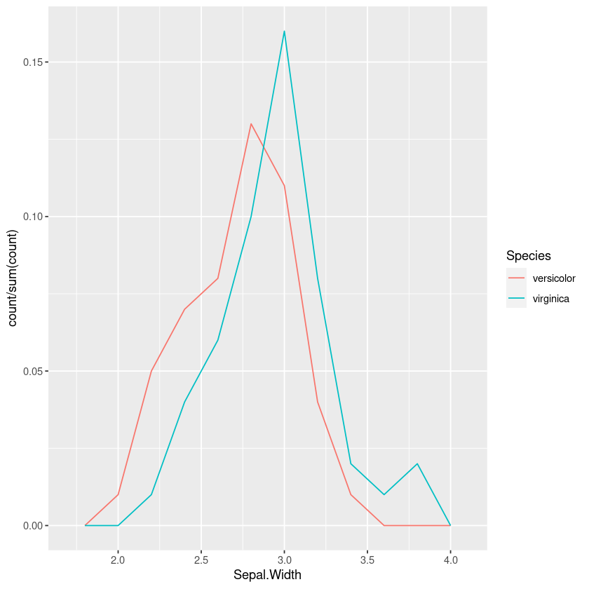
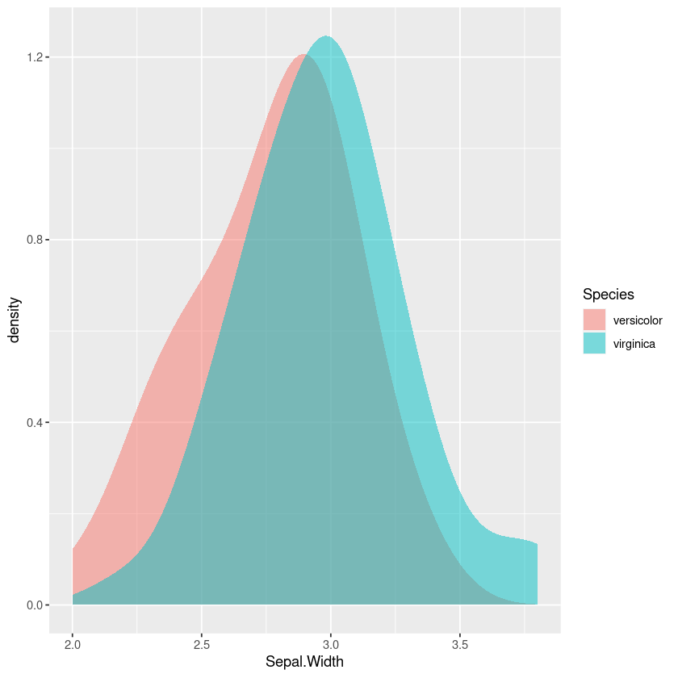
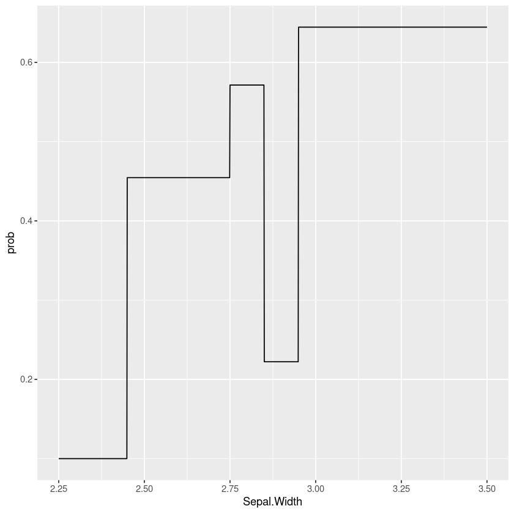

Binning Binary Predictions
When understanding how a binary prediction depends on a continuous input I find a very useful way is to bin it into quantiles and plot the average probability.
For example here’s a plot using the iris dataset showing how the probability that a flower is a “virginica” and not a “versicolor” changes with the sepal width of the flower. This kind of plot can show nonlinearities and indicate how we should include this variable in a logistic regression.

The rest of this article will consider some alternatives and show how to produce this report in R using dplyr and ggformula.
Alternative: Plotting the class
I’ve seen a lot of plots showing the actual binary data across the continuous variable, but I find it really uninformative especially when there are lots of data points. In particular the points often overlap and we need a way to handle that.
One technique to show all the points is to jitter them horizontally, but in the middle region I find it really hard to judge whether there are more points at 0 or 1 (my eyes dart back and forth between the two).
iris %>%
filter(Species != 'setosa') %>%
gf_jitter((Species=='virginica')~Sepal.Width, width=0, height=0.1)
However a similar technique of plotting the points, with colours or shape by the category is often useful for understanding the joint distribution. If points overlap exactly jittering can help show them
iris %>%
filter(Species != 'setosa') %>%
gf_jitter(col=~Species, Sepal.Length~Sepal.Width, width=0.05, height=0.05)
Alternative: Plotting the distribution
Another option is to compare plots of the distribution of each of the outcomes.
One option is to plot the histogram or frequency polygons. However just using the counts means that you’re mentally trying to adjust the heights, so we should make it a percentage of the total:
iris %>%
filter(Species != 'setosa') %>%
ggplot(aes(x=Sepal.Width, y = ..count../sum(..count..), colour=Species)) +
geom_freqpoly(bins=10)This is better than the jitterplot, but in the overlap it still takes some mental effort to compare the relative heights of the two.

Using density plots is also common, and there are inbuilt heuristics for picking the bandwidth so you don’t need to manually work out the bins like in a frequency polygon or histogram. However this can sometimes oversmooth behaviour, and again comparing the areas in my head isn’t easy.
iris %>%
filter(Species != 'setosa') %>%
gf_density(~Sepal.Width,fill=~Species, bw="SJ")
Binned Probability Plot
So what if instead of drawing the frequency polygons and trying to compare the ratios visually, we calculate the probability in each bin? Let’s bin this into equal quantiles, so each probability has a similar uncertainty.
First we create a function that returns a function that cuts into equal quantiles on the data. This means we could fit this on some training set, and apply it on a different dataset. To allow values outside the range we replace the lowest value with -Inf by default and the highest by Inf. If the data is concentrated and some of the quantiles are the same we remove the duplicate datapoints with unique.
quantile_cutter <- function(x, n, right=TRUE, lowest=-Inf, highest=Inf) {
x_quantile <- unique(quantile(x, seq(0, 1, length.out=n+1)))
x_quantile[1] = lowest
x_quantile[length(x_quantile)] = highest
# In case the lowest is set to min(x), include.lowest
function (y) {cut(y, x_quantile, include.lowest=TRUE, right=right)}
}For plotting the data we just apply the quantile cutter to itself.
cut_quantile <- function(x, n, right=TRUE, lowest=-Inf, highest=Inf) {
quantile_cutter(x, n, right, lowest, highest)(x)
}Then we can use this to plot the probability in bins as a function of the input; in this case it looks rather similar to our quantile binned plot.
iris %>%
filter(Species != 'setosa') %>%
group_by(bin = cut_quantile(Sepal.Width, 10)) %>%
summarise(Sepal.Width = mean(Sepal.Width),
p_virginica=mean(Species == 'virginica')) %>%
gf_point(p_virginica ~ Sepal.Width)Bias-variance tradeoff and tree models
There’s some art to picking the number of bins. If it’s too small there’s a lot of bias and we can’t see how the probability changes with the variable. If it’s too large there’s too much variance and it’s hard to see the trend from the noise. I often find a little trial and error gets a reasonable result.
We could look at this as a machine learning problem; we could try to pick the number of bins that minimises the (cross-validated) cross-entropy. I’d be interested whether we could build heuristics for this, similar to those for picking the bandwidth of a kernel density estimator.
Taking this a step further we can see this is really just a special case of a classification tree model where we’re forcing the cut points to have an equal number of points. Another approach would be to fit a tree model to the data, for example here’s a simple example using rpart:
tree_model <- rpart::rpart((Species == 'virginica') ~ Sepal.Width,
data = filter(iris, Species != 'setosa'),
method="class")
data.frame(Sepal.Width=seq(2.25, 3.5, by=0.001)) %>%
mutate(prob=predict(tree_model, type="prob", newdata=.)[,"TRUE"]) %>%
gf_line(prob ~ Sepal.Width)
Of course we don’t have to use rpart, we could use bagged or boosted trees, conditional inference trees or optimal decision trees (e.g. pydl8.5 or OSDT). Taking this a step further is something like the Explainable Boosting Machine that fits boosted trees to every variable and pairwise interaction, that can then be plotted. The advantage of this sort of approach is it takes into account correlations and interactions between varaibles (you see the effect of this variable after taking account of the others).
But even if we’re using these models to understand the data and help select and transform features it may be worth falling back to a more interpretable model such as a general linear model if it gives similar performance and is more robust.